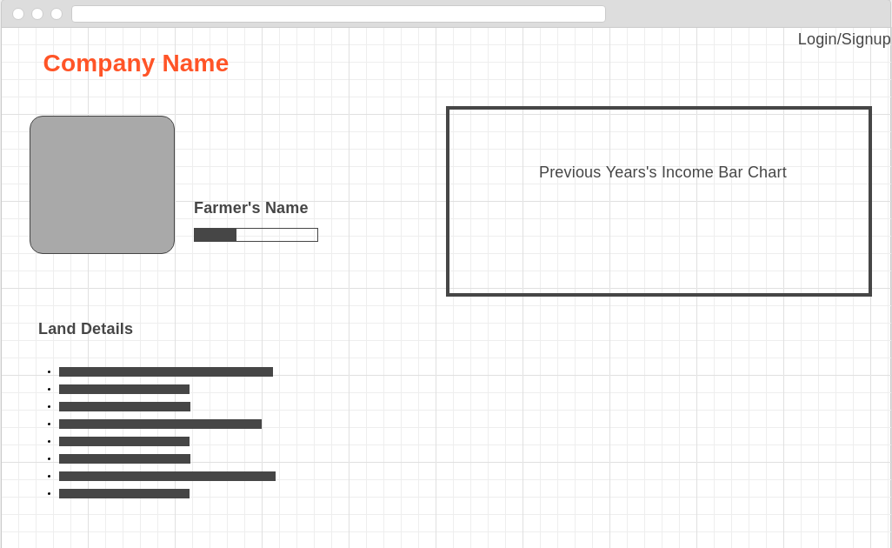

Table of Contents
- Introduction
- Overall Description
- External Interface Requirements
- System Features
- Other Nonfunctional Requirements
Appendix A: To Be Determined List
- Introduction
- Purpose
- Document Conventions
- Intended Audience and Reading Suggestions
- Product Scope
The purpose of this Software Requirements Specification (SRS) document is to give a detailed description of the requirements for the “Agriculture Microfiinance” (AMF) software. It will illustrate the purpose and complete declaration for the development of system. It will also explain system constraints, interface and interactions with other external applications. This document is primarily intended to be a reference for developing the first version of the system for the development team
The software does not offer any new terminology making it more user friendly. Anybody with experience of using internet is expected to be able to use the software.
This document is intended for all individuals participating in the AMF project. Readers interested in a brief overview of the product should focus on the rest Introduction, as well the Overall Description, which provide a brief overview of each aspect of the project as a whole.
Readers who wish to explore the features of AMF in more detail should read the System Features, which expands upon the information laid out in the main overview. Part 3 `(External Interface Requirements) offers further technical details, including information on the user interface as well as the hardware and software platforms on which the application will run.
The AMF system aims to create opportunities for mass population to invest on agriculture. The system is composed of a client side application which will run on both android and web. They system is designed to facilitate the process of crowd funding. Potential scenerios include paying online, data visualization, previous season's transactins etc. More information is given below.
- Overall Description
- Product Perspective
- Product Functions
- User Classes and Characteristics
- Operating Environment
- Design and Implementation Constraints
- User Documentation
- Assumptions and Dependencies
The product is a standalone software and not an additonal package. This is a new system compared to traditional agriculture financing systems.
The product is a software which allows farmers to get investment. It allows investors to make small scale investment in agriculture. It allows users to predict future profit margins based on previous data of transactions It allows users to assess risk when it comes to making investment in agriculture.
There are mainly two two types of users. Farmers can open accounts and post new business incentives. Investors can look up profit margins and risk factors for different crops as well as make investments
The primary source of interaction is an web app, which allows an any user to use the product without much technological knowledge. However an android application extends the usability of the software.
Implemantation at a large scale required human resourse as agents in user level where developers have a very few option to make an impact if there is any . To implemet our prediction or recommended system needs large data set for better accuracy .
A Software Requirements and Specification(SRS) file is uploaded as an html file which allows users to look up different parts of the software as well as get more sources for information.
A department will invest on every details of transaction, as there is no guarantee of fair financial transactions without verification. Investments are subjected to market risks. Natural disasters and other factors can be devastating to the agriculture industry. Advertisements can lead to earn revenue.
- External Interface Requirements
- Login Page
- Market
- Farmer's Profile
- Investor's Profile
- Land Profile
Users can login or signup using their gmail/facebook credentials.
Interface of list of available lands for investors to invest.

Farmer's profile will include the details of every season's performance of the farmer.

Investor can lookup their activity and details they provided.
Every details related to the land, previous season's perfomance, fertility rate will be provided in each profile.
- System Features
- Farmer profile
- Land profile
- Market
- Response Sequences:
Description and Priority: In this feature, there will be a profile of every farmer and every farmer will be verified by the government. There will be no access without the verified profile. Every investor will be able to manage their share and see the condition of their share market from their own profile. Transparency is the first priority.
Functional Requirements: Generally farmer profile feature will provide the information about the farmer and their previous reviews. These reviews will be helpful for the investor so that they can ensure about the farmer. Software will show the rating and verification of the farmer so that the investors undoubtedly invest their money.
Requirement: Farmer verification.Description and Priority:Land position, Size, Rating, fertility will be the discuss point in land profile feature. All the necessary information will be available and reviews about the land such as size, rating etc. This information will be helpful for the investors to decide about investing in the lands.
Functional Requirements: Land profile feature will provide users all the information that which land is perfect for which crop. Software will show users the rating of every individual land.
Requirements: Land verification.Description and Priority:The Market is the main feature of the software. It's a platform that gathers all the information from the database and shows the most necessary parts and lets users go to each details. It's a list of available lands, their size, fertility, crop that will be cultivated and the budget required and just about every details an user needs to decide upon investing on a land.
Banks will be assigned to manage money transaction. Every transaction will follow the rules of the system of the bank. Every verified farmer will be given a need based amount of money from the bank and the investor will take percentage of the share after the harvest or the deadline provided by the farmer. There will be a department consisting some agents to inspect the transaction of money.
- Other Nonfunctional Requirements
- Performance Requirements
- Safety Requirements
- Security Requirements
- Software Quality Attributes
- Business Rules
Performance should not be an issue because all of our server queries involve small pieces of data. Changing screens will require very little computation and thus will occur very quickly.Server updates should only take a few seconds as long as the phone can maintain a steady signal. The cost-division algorithms used by in application will be highly efficient,takling only a fraction of a second to compute.
The application will not affect data stored outside of its server nor will it affect any other applications installed on the user's phone.It cannot cause any damage to the phone or its internal components.The only potential safety concern associated with this applicaion applies to virtually all handset apps:This app shouldnot be used while operating a vehicle or in any other situation where the user's attention must be focused elsewhere.
This application assumes that only the user or whoever he/she allows will have access to his/her android handset.With that being said,Google email address is required to verify the identity of the user upon opening the app.Also it is protected by password.The user needs to verfy that he is a farmer and need to enter the app by a registration process,which will keep information about his personal details and he has to register his name in the government list as a farmer.So he have to register in the app by his registation farmer number.
The graphical user interface of the app is to be designed with usability as the first priority.The app will be presented and organized in a manner that is visually appealing and easy to navigate.There will be feedbacks and visual cues such as notifications to inform users of updates and pop-ups to provide users with instructions.To maintain flexibility and adaptability,the app will take into account situations in which a user loses internet connection or for watever reason cannot establish a connection with the server.These user will still be able to use the application but any transactions etc. posted while disconnected will be cached until the connection is restored.
Transaction will be done by bank acount,mastercard,bikash.Transperacy will be maintained by both buyers and farmers.Buyers and farmers can easily access to all informations.A team of expertise will monitor the budget and swot(strength,weakness,oppourtunities and threats). Which will be beneficial for both organization and buyer in the long run.
Appendix A: To Be Determined List
- Recommender System
- For Farmers
- For Investors
A recommender system for farmers to help them choose the best crop to cultivate on their land that will produce the most revenue for each season. It'll help the growth of economy as well as helping the farmers.
A recommender system for the investors will also be considered that will help investors secure their investments with help of Machine Learning provided that there are enough data to make it happen.